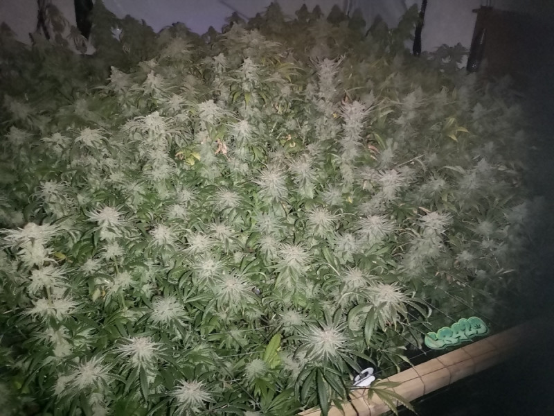
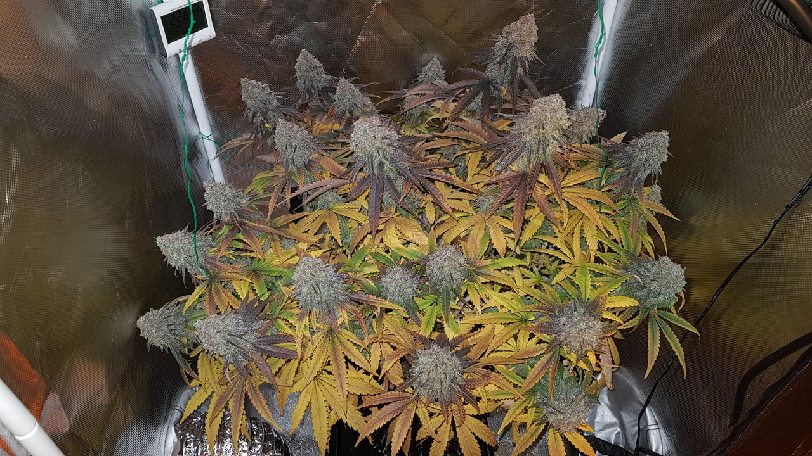

August 10th, 2020
Our main goal is to provide a safe and secure environment for weed growers to share information, and enjoy all things cannabis related from personal grow diaries, questions on cannabis deficiencies and to fix them.
Our 2nd goal is to create an information rich cannabis website that's a fun and friendly community at the same time.
With Growroom420, what you see is what you get, our team are all dedicated members, we all only want the best for the community and forum itself.
Sat Jan 04, 2020 11:26 am

I decided to try a commercial technique to see if more plants, makes more yield in the same area.... cut to the chase, no, it didnt. It saves maybe a week at most and was more agro than it was worth. I will never be trying this experiment ever ever again!
Second part of this test was to see if Dinafem BC was as good a producer as Exo luton cut. The result was Dina BC dwarfed the exo and was more frosty. It is also more of a head high imho, but I did cut at 8.5 weeks flower.
Exo was clones from flowering plant, BC was all seeds. There were 2 obvious phenos - one was tall and fat with few stems, other was tall and skinny with many.
Final result was 66 zips + a load of popcorn.

Good Morning everyone. That has been one of the best grows I've done and enjoyed every minute of it. This girl went down last night at 9 and a half weeks.. I will let the photos do the talking... thanks to everyone who shared this journey with me!